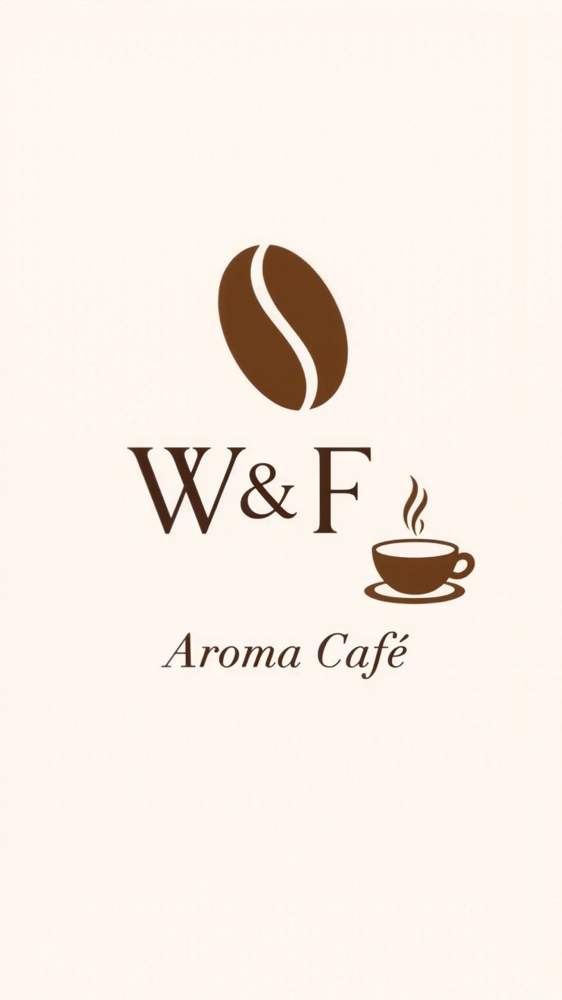

Café Premium de Lonya Grande

Hecho con amor por Walter y Fiorela 💛
S/ 29.90
S/ 59.90
S/ 89.00
Aquí pega tu historia del café
Ejemplo: Somos Walter y Fiorela de Lonya Grande. Cultivamos nuestro café en las alturas de Amazonas a más de 1200msnm. Cada grano es seleccionado a mano y tostado artesanalmente para llevarte el mejor aroma directo a tu taza. Más que café, es tradición y pasión familiar.
Escríbenos y te mandamos los datos completos
✅ 100% Arábica de altura
✅ Tostado artesanal
✅ Envíos a todo el Perú